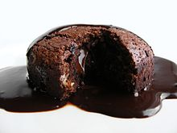

Molten chocolate cake

Description:
Molten chocolate cake is a popular dessert that combines the elements of a chocolate cake and a soufflé. Its name derives from the dessert's liquid chocolate center, and it is also known as chocolate moelleux (from French for "soft"), chocolate lava cake, or simply lava cake. It should not be confused with chocolate fondant, a recipe that contains little flour, but much chocolate and butter, hence melting on the palate (but not on the plate). It is a type of self-saucing pudding.
Ingredients:
- 115 grams unsalted butter, plus more for buttering the ramekins
- 170 grams bittersweet chocolate, chopped, best quality such as Ghirardelli
- 2 large eggs
- 2 large egg yolks
- 80 g light brown sugar, packed
- 1 teaspoon vanilla extract
- Pinch of salt
- 3 tablespoons all purpose flour
Steps:
-
Preheat the oven to 235°C and set an oven rack in the middle position. Generously butter six 180 ml ramekins (really be generous, and do not substitute non-stick cooking spray). Set the ramekins on a baking sheet.
-
Melt the butter in a medium bowl in the microwave. Immediately add the chopped chocolate and stir until the chocolate is completely smooth and melted. If a few chunks remain, place the bowl back in the microwave for 20 seconds, then stir again. Repeat if necessary. Set aside.
-
In the bowl of an electric mixer fitted with the paddle or beaters, beat the eggs, egg yolks, brown sugar, vanilla and salt at high speed until thickened and pale, about 4 minutes. Add the melted chocolate mixture and flour to the egg mixture and fold with a rubber spatula until just combined (the chocolate sinks to the bottom so be sure to scrape it up into the batter).
-
Spoon the batter evenly into the prepared ramekins and bake for 10 minutes, until the cakes are set and puffed over the edges of the ramekins. Let the cakes cool in the ramekins for 1 to 2 minutes; then, holding the hot ramekins with a dish towel, carefully invert the cakes onto dessert plates. They should pop right out, but you can run a thin-bladed knife around the edges if necessary. Serve immediately. (It's important not to let the cakes sit after baking, as the centers will continue to cook.)
Go back